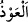

sizin de Rabbinize sığındım, dedi.
“Mûsâ,” lânetli Firavun’un kendisini katletmekle ilgili olarak söylediklerini işitince,
kavmine: “Ben, hesap gününe inanmayan,” kendilerini îman edemeyecek kadar büyük
gören “her kibirliden,” her bir âsîden “benim de Rabbim sizin de Rabbinize
sığındım,” ben ilticâ ettim; sığınıp aman diledim “dedi.”
“__WORD__ başkasına sığınıp ona tutunmak demektir.
İstenen şey “koruma ve yetiştirme” olduğu içindir Mûsâ (a.s.), özellikle Allah
Teâlâ’nın “Rab” ismini zikretmiştir. “Rab” kelimesini hem kendisine hem de kavmine
izâfe etmesi ise, Allah’a sığınma ve O’na tevekkül etme konusunda onların da kendisine
muvafakatini sağlamak içindir. Çünkü nefislerin birbirine arka çıkmasının, ilâhî icabeti
sağlamakta açık bir tesiri vardır. İnsanların beş vakit namazı, Cuma ve bayram
namazlarını edâ ederken, ayrıca istiska (yağmur) duasına çıkarken bir araya
gelmelerinin asıl sebebi de budur.
Hz. Mûsâ, Firavun’un adını ağzına almaksızın onu, hem Firavun’u hem onun safındaki
zâlimleri hem de başka azılı yöneticileri kapsayan bir vasıfla andı. Böylece hem
istiâzeyi genelleştirip bu tiplerin tamamından Allah Teâlâ’ya sığınmış oldu. Hem de
Allah’a karşı katı kalpli olmanın ve O’na karşı böylesine cür’etkâr davranmanın temel
sebebinin “kibirlilik” ve bu kötü vasfı takip eden “yeniden dirilişe îman etmemek”
olduğuna dikkat çekti.
Fakir (Bursevî) der ki: Râzî ve Beyzâvî tarafından da benimsenen, “Mûsâ’nın
Firavun’u adıyla zikretmemesinin sebebi, kendisinin küçükken yetişmesindeki hakkını
gözetmesidir” şeklinde bir görüş ileri sürmüştür. Bu görüş, Mûsâ’nın Firavun’u başka
yerlerde adıyla anması hatırlatılarak reddedilebilir. Meselâ bir yerde: “Ben de senin
kesinlikle helâk edileceğini zannediyorum ey Firavun!” (el-İsrâ 17/102) demiştir.
Böyle bir ifade, Mûsâ’nın sözü Firavun’un yüzüne şifâhî olarak sâdır olmasından
dolayı, bu âyette bizzat adını vererek gıyâbî bir şekilde “Firavun’dan” demesinden çok
daha şiddetlidir.
Peşinden “hesap gününe inanmayan” ifadesinin getirilmesi, katı kalpli bir kibirlinin
tabîatının, iş ve gücünün, hakkı boğmaya halkı da küçümsemeye çalışmak olduğunu
belirtir. Böyle biri ancak ilâhî hesap ve cezâ inancını ikrâr edip bu konuda korkuya
kapıldığı zaman dizginlenebilir. Ancak yeniden dirilişi yalanlama ile kibrin bir araya
gelmesi durumunda kişi normalden çok daha zâlim ve taşkın olur. Bütün büyük
günahları irtikâb edebilir. Dolayısıyla böyle birinden Allah’a sığınılması çok daha
gereklidir.
İmam Ebu Hanîfe (r.h)’e, “îmanın yok olmasına en çok sebebiyet veren günah
nedir?” diye sorulunca: “Îmanlı olduğuna şükretmemek, âkıbet endişesi taşımamak ve
Allah’ın kullarına zulmetmektir” diye cevap vermiştir. Zira bu üç menfi vasfı taşıyan
biri, ezeli saâdet hükmü kendisine yetişmezse, genellikle dünyadan kâfir olarak göçer.
Haberde şöyle anlatılır: Allah Teâlâ rüzgârı Hz. Süleyman’ın emrine âmâde
kıldığında rüzgâr onu ve kavmini bir kanepe üzerinde uçururken, göktekilerin